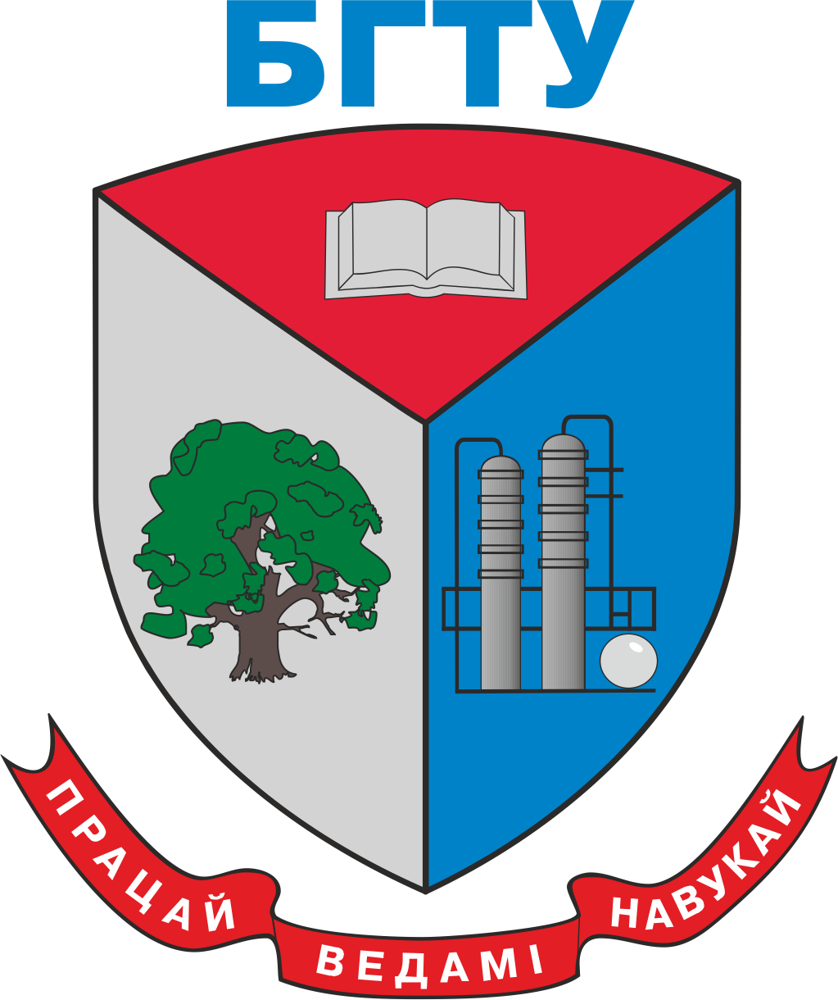

Барковский Е. В., Медяк Д. М., Кулак М. И. Моделирование износа офсетного полотна / Труды БГТУ. – 2013. – №8: Издательское дело и полиграфия. – С. 7–11.
Барковский Е. В., Медяк Д. М. Влияние процесса изнашивания на параметры шероховатости поверхности офсетного полотна / Труды БГТУ. – 2014. – № 9: Издательское дело и полиграфия. - С. 8–12.
Барковский Е. В., Медяк Д. М., Кулак М. И. Исследование износа флексографских печатных форм / Вестник Санкт-Петербургского государственного университета технологии и дизайна. Сер. 1 Естественные и технические науки. – СПб, 2015. – № 2. – С. 41–44.
Барковский Е. В., Медяк Д. М., Кулак М. И. Исследование износа флексографских печатных форм в лабораторных и производных условиях / Труды БГТУ. – 2015. – №9: Издательское дело и полиграфия. – С. 41–44.
Барковский Е. В., Медяк Д. М., Кулак М. И. Характерные особенности износа офсетных печатных форм / Труды БГТУ. – 2015. – № 9: Издательское дело и полиграфия. - С. 3–6.
